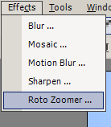
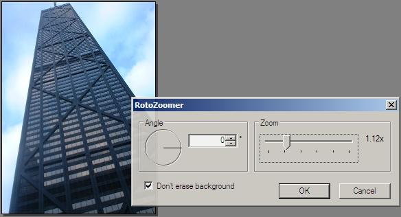
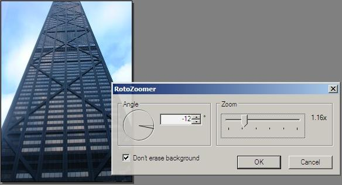

Roto Zoomer
  
The Roto Zoomer tool can be used to rotate the image
and zoom in on the image at the same time. Additionally, these operations can
be done with a high degree of precision.
The picture to the right was taken with the camera
rotated slightly. The RotoZoomer tool has been selected, and is currently shown
with default settings.
With the proper angle selected, the image is rotated,
resulting in a straighter image. It has also been zoomed in slightly so that
the rotated image fits in the canvas properly.